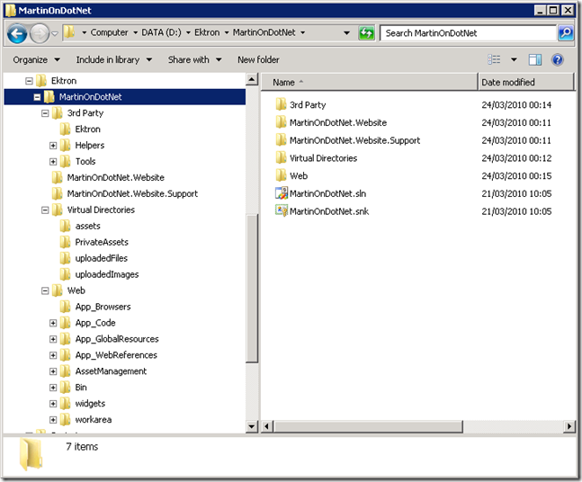

In Part 1, I discussed why you might want to develop your website outside of the default Ektron workarea and gave a brief overview of your options.
This time around, I’m going to show how to configure your Visual Studio Solution and projects and IIS to get you started.
You will need:
The folder structure should look like this:
This may look complicated but it allows us to easily use source control (such as TFS or Subversion) to allow multiple developers to work on a solution and is Best Practise.
In keeping with the best practise handling of 3rd Party libraries:
This will create ‘.refresh’ files in the ‘/Web/bin’ folder which can safely be checked in to any version control system.
The IIS configuration can be done now so we can begin to configure Ektron via the workarea. This is a relatively simple procedure:
The workarea website should pretty much be complete now from a infrastructure configuration point of view. but you will need to amend the following web.config settings:
You should also be able to run SearchConfigUI (remember to right click ‘Run As Administrator’ in Windows Server 2008 or Windows 7). Define meaning full catalogue names and check that the Assets and Private Assets directories have been correctly located (within the Virtual Directories folder).
You should now be able to log into the website by visiting ‘http://local.cms.clientproject.dev.companydomain/cmslogin.aspx’ and using the builtin account the was configured when Ektron was installed.
It’s probably a good idea at this stage to configure any Code Analysis rules on the clientproject.Website and clientproject.Website.Support projects and to configure the dependencies and set the assemblies to be strongly named. You should ensure that build order of the solution goes something like:
You can control this by setting project dependencies either implicitly by adding a reference to the clientproject.Website.Support project into the clientproject.Website project or by using the ‘Project Dependencies’ dialog (checking the build order in the ‘Build Order’ tab on the same screen).
Depending on the level on integration with the workarea you need, you can configure an IIS website to point at your Web Application project for lightweight testing of the your code. Simply follow the instructions for configuring IIS but point the website at the /clientproject.Website folder. This means you can quickly test your code, without IIS having to load all of the Ektron libraries.
At this point you can start to build your Ektron front end within the clientproject.Website and by copying some basic configuration from the /Web project (such as connectionStrings and appSettings). However, to deploy our web application into the Ektron workarea website we’re going to need some custom build steps, which I’ll cover in Part 3.
{kind=link}